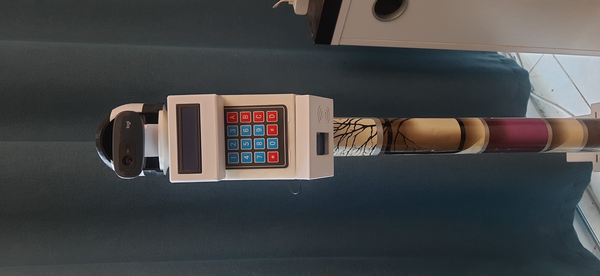

A low-cost assistive robot, developed in the open
CARA is a sub-$500, GSM-connected robot that watches over an elderly person living alone and alerts family abroad without relying on Wi-Fi. V2.0 is its independent continuation: the system is documented here, and every experiment, finding and dead end is recorded as it happens.

Documentation
About CARA
The problem, who the robot is for, and what V2.0 sets out to do.
Objectives
V2.0 goals, design constraints, and how each goal maps to experiments.
Architecture
Two-tier design, software components, command protocol and alert logic.
Hardware
Components, pin map, power and cost — with the current status of each part.
Features
Every designed feature and whether it works today, with evidence.
Gallery
All photos and videos from the daily notes in one place.
Latest journal entries
All entries →Recent daily notes
All notes →Experiments
All experiments →How V2.0 is documented
Daily Notes
The lab notebook. Written on the days something was built, measured, broken or understood — each on its own page with photos, videos and raw numbers. Dated and never rewritten afterwards.
Daily Notes →Experiments
Every line of investigation has its own page with its question, the evidence that motivated it, the planned method and what will be measured. Notes and entries link back to it automatically.
Experiments →Journal Entries
Formal write-ups, published when an experiment produces a real result — positive or negative. Structured like research papers and printable in journal format.
Journal →